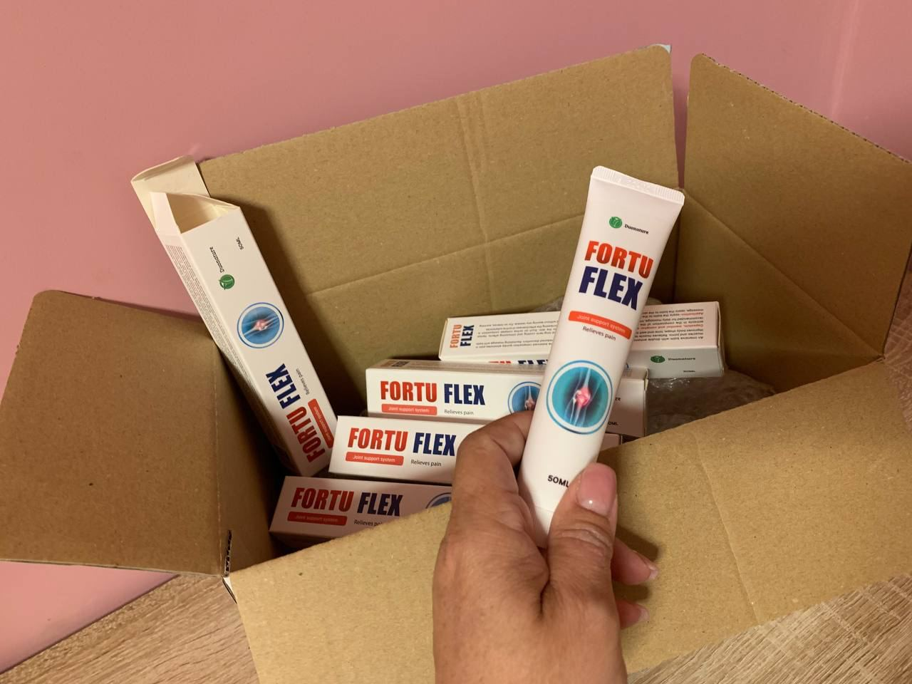

ΑΛΛΑΓΗ ΖΩΗΣ: Έλληνας φοιτητής της ιατρικής εφηύρε ένα μοναδικό προϊόν, χάρη στο οποίο είναι δυνατό να εξαλειφθούν πλήρως τα προβλήματα των αρθρώσεων! Χωρίς χειρουργείο!
- ΥΓΕΙΑ
- ΣΥΜΠΛΗΡΩΜΑΤΑ ΔΙΑΤΡΟΦΗΣ
- ΒΙΤΑΜΙΝΕΣ
- ΠΟΝΟΣ ΣΤΙΣ ΑΡΘΡΩΣΕΙΣ
- ΥΓΙΕΙΣ ΑΡΘΡΩΣΕΙΣ
Δεν είναι όλα πριν και μετά;
Αυτός είναι ο Λεόντειος Κουντούρης, ο κορυφαίος φοιτητής ιατρικής στο Πανεπιστήμιο του Βερολίνου.
Κατάφερε να απαλλαγεί εντελώς από τα προβλήματα στις αρθρώσεις! Χωρίς χειρουργείο!
Η ιατρική του ειδικότητα είναι η ρευματολογία. Και ενώ εργαζόταν για τη διδακτορική του διατριβή, συνάντησε μια νέα μέθοδο θεραπείας των αρθρώσεων που κανείς δεν είχε ακούσει ποτέ πριν.
Για να βεβαιωθεί ότι δεν ήταν απλώς κάτι τυχαίο, ζήτησε από τη θεία του Ζήνα Μαρκίδη να δοκιμάσει αυτή τη μέθοδο.

Η Ζήνα απαλλάχθηκε από την επώδυνη αρθρίτιδα σε 7 ημέρες.
Ο γείτονας του ο Λευτέρης Μιχαηλίδης δοκίμασε επίσης αυτή τη νέα ολοκληρωμένη θεραπεία:
Ο Μιχαηλίδης κατάφερε να θεραπεύσει την οστεοαρθρίτιδα του γόνατος δεύτερου βαθμού σε 10 ημέρες.
Και ένας από τους συμμετέχοντες στην έρευνα της διατριβής του, ο Θησέας, πέτυχε εξαιρετικά αποτελέσματα:
Ο Θησέας θεράπευσε το πρησμένο γόνατό του χάρη στη μέθοδο του Λεοντείου.
Ακόμη και οι καθηγητές και οι δάσκαλοι του Λεοντείου συγκλονίστηκαν από τη νέα του μέθοδο.
Στη σκηνή ενώπιον της επιστημονικής κοινότητας δήλωσε:
«Μπορώ να κάνω οποιονδήποτε να έχει παρόμοια αποτελέσματα. Αν υποφέρετε από τον πόνο στις αρθρώσεις... ΜΠΟΡΕΙΤΕ να ανακάμψετε πλήρως. Δεν απαιτείται χειρουργική επέμβαση ή άλλες επεμβάσεις. Χάρη σε αυτό το μοναδικό μέσο».
Οι καθηγητές του και οι συνάδελφοί τους έπαθαν σοκ. Τους φαινόταν όλα ψεύτικα.
Αλλά ο Λεόντειος τους απέδειξε ότι έκαναν λάθος.
Ας μιλήσουμε λεπτομερώς για τη θεραπεία που εφηύρε ο Λεόντειος.
Πώς κατάφερε ο Λεόντειος να κάνει αυτή την ανακάλυψη;
Ο Λεόντειος ανακάλυψε αυτήν την επαναστατική λύση για τον πόνο στις αρθρώσεις κατά τη διάρκεια του δεύτερου έτους του στο Ιατρικό Πανεπιστήμιο του Βερολίνου.
Λόγω κληρονομικών προβλημάτων στις αρθρώσεις, που επιδεινώθηκαν λόγω σκληρών σπουδών και έλλειψης χρημάτων για τις απαραίτητες θεραπείες, υπέφερε όλο και περισσότερο από πόνους στα πόδια. Σαν μελλοντικός ρευματολόγος, ήθελε να εφεύρει ένα προϊόν που θα βοηθούσε τον εαυτό του και όλους τους ανθρώπους με παθήσεις των αρθρώσεων.
Λόγω του ότι βρισκόταν σε αναπηρικό καροτσάκι, η προσωπική του ζωή πήγε επίσης στραβά ...
«Μια μέρα έψαχνε για υλικά για τις σπουδές του στο τμήμα σπάνιων βιβλίων της βιβλιοθήκης του πανεπιστημίου.
Βρήκε ένα παλιό βιβλίο που περιέγραφε μια ενδιαφέρουσα, αλλά ήδη ξεχασμένη έρευνα «Μέθοδος αποκατάστασης και θεραπείας των αρθρώσεων».
Όντας σε αναπηρικό καροτσάκι, ο Λεόντειος ήξερε ότι έπρεπε να κάνει κάτι γι' αυτό».
Μια νέα μέθοδος θεραπείας των αρθρώσεων
Έπρεπε να εφαρμόσει αυτή τη νέα μέθοδο θεραπείας των αρθρώσεων.
Αρχικά, προσπάθησε να δημιουργήσει το απαραίτητο προϊόν από αυτοσχέδια μέσα, αναμειγνύοντας θειικά άλατα και βιταμίνες. Αλλά, δυστυχώς, το αποτέλεσμα δεν ήταν το αναμενόμενο και χωρίς ειδικό εξοπλισμό ήταν δύσκολο και πολύ ακριβό.
Όμως κινούνταν προς τη σωστή κατεύθυνση και αυτή η μέθοδος βρισκόταν στη διαδικασία ανάπτυξης.
Ευτυχώς, απέκτησε πρόσβαση στο εργαστήριο της ιατρικής σχολής του Βερολίνου, το οποίο του επέτρεψε να πειραματιστεί με αυτή τη μέθοδο.
Η μέθοδος αποκατάστασης των αρθρώσεων ήταν απλή, το εργαστήριο είχε όλα τα απαραίτητα συστατικά.
Μετά από μήνες δοκιμών και σφαλμάτων...
...Ο Λεόντειος κατάφερε να συνδυάσει τον τέλειο συνδυασμό συστατικών.
Όλα αυτά ήταν απαραίτητα για να δοκιμάσετε αυτή τη μέθοδο θεραπείας των αρθρώσεων.
Ο Λεόντειος δοκίμασε την έρευνά του στον εαυτό του. Μετά την πρώτη μέρα της θεραπείας, ένιωθε καλύτερα. Το προϊόν έχει αρχίσει να δίνει εκπληκτικά αποτελέσματα
Τη δεύτερη μέρα μπόρεσε να σταθεί μόνος του χωρίς υποστήριξη.
Μια εβδομάδα αργότερα περπάτησε 20 μέτρα μόνος του.
Και τελικά, μετά από 14 μέρες, άρχισε να τρέχει στο γήπεδο και επέστρεψε στο σκι.
Σε μόλις 14 ημέρες, αποκατέστησε πλήρως τις αρθρώσεις του.
Πώς λειτουργεί αυτή η μέθοδος θεραπείας των αρθρώσεων;
Στο σώμα μας υπάρχει μια ουσία - η γλυκοζαμίνη, είναι αυτή που συμβάλλει στην υγεία των αρθρώσεων.
Η γλυκοζαμίνη είναι ένα δομικό υλικό για χόνδρους, τένοντες, συνδέσμους. Αυτό το συστατικό αυξάνει την ελαστικότητα των αρθρώσεων, μειώνει την περαιτέρω καταστροφή του χόνδρου, αυξάνει την κινητικότητα και ανακουφίζει από τα συμπτώματα του πόνου.
Η μέθοδός μου βελτιώνει τη σύνθεση της γλυκοζαμίνης, βοηθά στην καλύτερη και ταχύτερη αφομοίωση αυτής της ουσίας. Όλα αυτά οδηγούν σε μείωση των όρων αποκατάστασης του χόνδρινου ιστού και κατά συνέπεια του αρθρικού ιστού.
Η έρευνα που βρήκα στο βιβλίο αφορούσε πρώιμα πειράματα από τη δεκαετία του 1980. Ένας ασθενής που πέρασε από τη θεραπεία της νέας άρθρωσης κατάφερε να απαλλαγεί από τον πόνο και το τσούξιμο σε 10 ημέρες.
«Όμως η επιστημονική κοινότητα εκείνης της εποχής ήταν φοβισμένη, δεν ήταν έτοιμη για τέτοια επιτεύγματα.
Φοβούμενοι την ευθύνη, το πείραμα καλύφθηκε και σύντομα ξεχάστηκε».
Αλλά τώρα και εσείς μπορείτε να θεραπεύσετε τις αρθρώσεις σας μέσα σε λίγες μόνο ημέρες.
... Τι να κάνετε εάν υπάρχουν προχωρημένα προβλήματα στις αρθρώσεις;
Μην ανησυχείτε.
Ακόμα κι αν έχετε μεγάλα προβλήματα στις αρθρώσεις. Ακόμα κι αν έχετε ήδη περάσει πολλά χρόνια για τη θεραπεία τους.
Μια νέα μέθοδος θεραπείας των αρθρώσεων μπορεί εύκολα να το αντιμετωπίσει αυτό.
Πάρτε, για παράδειγμα, τον 62χρονο Ρένο.
Τα τελευταία 5 χρόνια, παλεύει με πρήξιμο και πόνο στο γόνατό του. Αλλά αφού δοκιμάσαμε τη μέθοδό μας. μπορεί να κάνει ποδήλατο, να περπατήσει πολύ και να ανέβει σκάλες.
Και ταυτόχρονα ξέχασε όλες τις ταλαιπωρίες του.
Δείτε πώς ο Ρένος οδηγεί το ποδήλατό του:
Μετά είναι η Φωτεινή, 50 χρονών, που έχει 3 εγγόνια και θέλει να περνά περισσότερο χρόνο μαζί τους.
Σε μόλις 7 ημέρες κατάφερε να θεραπεύσει το κάτω μέρος της πλάτης της. Και τώρα, υγιής και χαρούμενη, παίζει με τα εγγόνια της.
Και μετά είναι ο Λάζαρος, 49 χρονών,, του οποίου οι αρθρώσεις άρχισαν να τον ενοχλούν μετά από 40 χρόνια.
Δεν θα πιστέψετε! Αλλά αφού ακολούθησε την κοινή μέθοδο θεραπείας μας, θυμήθηκε πώς ήταν να παίζεις ξανά ποδόσφαιρο.
Φανταστείτε ότι μπορείτε να περπατήσετε ξανά πολύ, να αθληθείτε, να ανεβείτε σκάλες και να μην χρειάζεστε βοήθεια από άλλους. Ή πώς είναι να νιώθετε τόσο υγιής όσο όταν ήσασταν νέος.
Μια νέα μέθοδος θεραπείας των αρθρώσεων μπορεί να κάνει όλα τα όνειρά σας για μια δραστήρια ζωή πραγματικότητα.
Για τα προβλήματα των αρθρώσεων δεν φταίτε εσείς
Ο Λεόντειος πάντα αναρωτιόταν γιατί ο καθηγητής του επιμένει σε πιθανά επικίνδυνα και ακριβά φάρμακα και θεραπείες.
Καθώς εμβάθυνε την έρευνα του, ανακάλυψε συγκλονιστικά νέα.
Η φαρμακευτική μαφία και οι ρευματολόγοι σε όλο τον κόσμο κρύβουν την ύπαρξη καλύτερων θεραπειών όσο μπορούν, επειδή είναι πιο κερδοφόρο να πουλάς ένα προϊόν που δίνει προσωρινή ανακούφιση αλλά δεν θεραπεύει εντελώς!
Αλλά τώρα...
Αυτή είναι η τελευταία θεραπεία που θα χρειαστείτε.
Δεν θα χρειαστείτε ξανά κρέμα αρθρώσεων, ένεση ή χειρουργική επέμβαση.
Πώς κι έτσι;
Όταν ο Λεόντειος έμαθε για αυτή τη νέα θεραπεία αρθρώσεων, έπρεπε να βρει κάποιον τρόπο ώστε οι άνθρωποι να τη χρησιμοποιούν στην καθημερινή τους ζωή.
Η έρευνά του τον οδήγησε στην ανακάλυψη ενός μυστικού συστατικού.
Αυτό το συστατικό καθιστά τη νέα μέθοδο θεραπείας των αρθρώσεων διαθέσιμη στο ευρύ κοινό.
Και μπορεί να βοηθήσει στη θεραπεία των αρθρώσεων σας!
% ΤΩΝ ΑΤΟΜΩΝ ΑΝΑΚΤΗΣΑΝ
- - Άτομα που χρησιμοποιούν παραδοσιακές μεθόδους θεραπείας των αρθρώσεων
- - Εθελοντές που δοκίμασαν τη νέα μέθοδο θεραπείας των αρθρώσεων
Δεν θα έχετε μόνο βραχυπρόθεσμα αποτελέσματα.
Και αν αναρωτιέστε πού θα βρείτε αυτό το προϊόν...
...δεν θα βρείτε ποτέ τо προϊόν Fortuflex στα καταστήματα γιατί ο Λεόντειος μόλις ολοκλήρωσε την ανάπτυξη αυτής της φόρμουλας. Αυτός είναι ο λόγος που ο γιατρός σας πιθανότατα δεν σας έχει αναφέρει αυτή τη κρέμα ποτέ πριν.
Από εδώ και στο εξής, μπορείτε να κάνετε μόνο μια δραστήρια ζωή.
Ο Λεόντειος και η ομάδα του μόλις δημιούργησαν τις πρώτες παρτίδες αυτής της κρέμας.
Αλλά καλύτερα να βιαστείτε γιατί αυτό το νέο απόθεμα εξαντλείται ΓΡΗΓΟΡΑ:
Φανταστείτε αν θα μπορούσατε να πάρετε αυτή τη κρέμα πριν τελειώσει η τρέχουσα παρτίδα;
Μπορεί να ξεχάσετε τι είναι ο πόνος στις αρθρώσεις και τα κινητικά προβλήματα.
Μπορείτε να ασχοληθείτε με οποιοδήποτε είδος έντονης δραστηριότητας σε οποιαδήποτε ηλικία
...και μην ανησυχείτε για τον πόνο στις αρθρώσεις.
Και θα είστε πιο ευτυχισμένοι!
Γιατί όμως ο Λεόντειος θέλει να παράγει αυτήν την κρέμα;
Ο Λεόντειος θέλει και άλλοι άνθρωποι να είναι το ίδιο επιτυχημένοι
Θέλει απλώς να βοηθήσει τους ανθρώπους να θεραπευτούν σαν αυτόν. Αυτός είναι ο στόχος της ζωής του ως μελλοντικός γιατρός που ειδικεύεται στη θεραπεία των αρθρώσεων.
Έπρεπε να βρει κάτι που θα λειτουργούσε για το υπόλοιπο της ζωής του.
Σύντομα και εσείς θα δείτε τα αποτελέσματα της θεραπείας που δεν έχετε ξαναδεί.
Καμία επέμβαση.
Χωρίς σπρέι ή ακριβές ενέσεις.
Απλά φανταστείτε να μην αισθάνεστε πόνο και να κινείστε χωρίς ενόχληση.
Ποιά είναι τα συστατικά της κρέμας αυτής;
Ονομάζονται βιταμίνες Ε και Β3.
Βοηθούν στην καλύτερη και ταχύτερη αφομοίωση της γλυκοζαμίνης, την οποία παίρνουμε από τα τρόφιμα, για την αποκατάσταση των αρθρώσεων.
Στον ιστό του χόνδρου, η γλυκοζαμίνη μετατρέπεται σε ουσίες απαραίτητες για τις αρθρώσεις.
Οι βιταμίνες Ε και Β3 έχουν θετική επίδραση σε ολόκληρο το σώμα.
Οι βιταμίνες Ε και Β3 όχι μόνο βελτιώνουν την απορρόφηση της γλυκοζαμίνης αλλά αυξάνουν και την ποσότητα της στον οργανισμό.
Αυτό βοηθά το σώμα να έχει πάντα τη σωστή ποσότητα ουσιών για την υγεία των αρθρώσεων.
...και ποιό είναι το καλύτερο;
Για να έχετε εξαιρετικά αποτελέσματα, δεν χρειάζεται να αγοράσετε ακριβά σπρέι ή να κάνετε επεμβάσεις.
Δείτε αυτό το τεστ που έγινε σε δύο ασθενείς.
Ο Λεόντειος έβαλε μια γυναίκα να χρησιμοποιήσει ένα σπρέι φαρμακείου για ένα μήνα και μια άλλη γυναίκα χρησιμοποίησε την κρέμα Fortuflex με βιταμίνες Ε και Β3.
Μια γυναίκα που υποβλήθηκε σε θεραπεία με σπρέι φαρμακείου δεν απαλλάχθηκε από τον πόνο:
Ωστόσο, η γυναίκα που χρησιμοποίησε την κρέμα Fortuflex…
... θεράπευσε πλήρως την αρθρίτιδα της
Ένας από τους λίγους καθηγητές του που αναγνώρισε τα επιτεύγματα του Λεοντείου είπε:
«Αυτή η κρέμα Fortuflex είναι επαναστατική. Εύχρηστη. Και έχετε τα πιο γρήγορα αποτελέσματα θεραπείας χωρίς χειρουργική επέμβαση και ακριβά σπρέι. Δεν υπάρχουν επίσης παρενέργειες. Συνιστάται."
Πείτε αντίο στα φαρμακευτικά σπρέι, τη θεραπεία, τις ενέσεις και τις χειρουργικές επεμβάσεις...
...πιο χαρούμενη, ευκολότερη θεραπεία είναι πλέον διαθέσιμη.
Ίσως όμως αναρωτιέστε πώς να το κάνετε αυτό στην καθημερινότητά σας.
Είναι απλό!
Γιατί…
Αυτός είναι ο ευκολότερος τρόπος για τη θεραπεία των αρθρώσεων
Γιατί αυτός είναι ο ευκολότερος τρόπος για να θεραπεύσετε τις αρθρώσεις;
Απλώς χρησιμοποιήστε την κρέμα δύο ή τρεις φορές την ημέρα. Και εσείς, επίσης, θα θεραπευθείτε σε περίπου 2 εβδομάδες!
Δεν χρειάζεται χειρουργείο και ακριβά σπρέι!
Χωρίς επώδυνες ενέσεις.
Καμία εξουθενωτική θεραπεία.
Δεν το πιστεύετε;
Δείτε πώς η Λένα θεράπευσε τα γόνατά της σε 7 ημέρες:
Είπε: «Για πολύ καιρό είχα έντονο πόνο στην άρθρωση του αριστερού γόνατος. Για αυτό ακριβώς το λόγο, υπήρχαν δυσκολίες στην κίνηση. Πήγα σε ειδικό, διαγνώστηκα με οίδημα στο αριστερό μηριαίο οστό. Μου πρότειναν να κάνουν μια επέμβαση στο γόνατο, αλλά φοβόμουν πολύ τη διαδικασία γιατί θα έπρεπε να μου βάλουν βελόνες στο σώμα μου. Ευτυχώς, γνώρισα τον Λεόντειο και άρχισα να χρησιμοποιώ την Fortuflex την ώρα που έπρεπε. Μετά από 3 ημέρες ο πόνος εξαφανίστηκε εντελώς και μια εβδομάδα αργότερα περπατούσα ήδη χωρίς πόνο και ξεκίνησα το σκανδιναβικό περπάτημα ακολουθώντας τη μόδα. Η φωτογραφία δείχνει το αποτέλεσμα της προόδου μου.”
Και εδώ είναι τα αποτελέσματα της Fortuflex μετά από 10 ημέρες:
Είπε: «.Είχα μια ιστορία με διογκώνεις στη φτέρνα μου. Δεν έχω δοκιμάσει τίποτε... Και αποτάθηκα σε έναν ειδικό, χρησιμοποίησα αλοιφές και εφάρμοσα λαϊκές θεραπείες ... Τίποτα δεν βοήθησε. Εμπιστεύτηκα τον Λεόντειο, πήρα μέρος στο πείραμα. Μετά από 2 εβδομάδες, δεν υπήρχε ίχνος εξογκωμάτων στις φτέρνες μου! Εδώ είναι το αποτέλεσμα μου. Σε ευχαριστώ Λεόντειο!»
Φανταστείτε ότι μπορείτε να απολαύσετε τη ζωή χωρίς πόνο. Και μην εκτίθεστε σε επεμβάσεις, θεραπείες, ενέσεις...
... σε έναν ενεργό τρόπο ζωής.
Βήματα, βόλτες, ποδηλασία: μπορείτε να τα κάνετε όλα.
Επειδή έχετε υγιείς αρθρώσεις.
Έτσι, η γρήγορη αποκατάσταση των αρθρώσεων είναι εξαιρετική.
Υπάρχει όμως κίνδυνος να επιστρέψει ο πόνος;
Όχι, δεν υπάρχει κίνδυνος επανεμφάνισης προβλημάτων στις αρθρώσεις.
Η Έλενα παλεύει με σπασμένες αρθρώσεις εδώ και αρκετά χρόνια. Και χρησιμοποιούσε κάθε είδους αλοιφές και έκανε διάφορες θεραπείες.
Τίποτα δεν μπορούσε να θεραπεύσει τις αρθρώσεις της.
Ωστόσο, όταν συμμετείχε στα πειράματα του Λεοντείου, κατάφερε να θεραπεύσει τις αρθρώσεις της σε 5 ημέρες και κατάφερε να κολυμπήσει ξανά:
Και μετά από 6 μήνες.
Η Έλενα έχει ήδη ξεχάσει τι είναι το τρίξιμο στις αρθρώσεις και η δυσφορία.
Ο Γεώργιος, ένας άλλος από τους εθελοντές που δοκίμασαν το προϊόν του Λεοντείου, απάντησε 2 εβδομάδες μετά τη θεραπεία:
«Αφού γιάτρεψα τις αρθρώσεις μου, δεν έχω αλλάξει τίποτα εδώ και 6 μήνες. Και μάντεψε τι; Ο πόνος στις αρθρώσεις μου δεν έχει επιστρέψει!».
Εδώ είναι μια φωτογραφία του Γεώργιου:
Μάλλον αναρωτιέστε…
Είναι ασφαλής η κρέμα Fortuflex;
Н Fortuflex είναι πολύ ασφαλή καθώς περιέχει καλά ερευνημένες βιταμίνες που ανακάλυψε ο Λεόντειος στην έρευνά του.
Χωρίς παρενέργειες.
Και δείτε τι είχαν να πουν ορισμένοι από αυτούς τους ασθενείς:
«Ήμουν δύσπιστη για την κρέμα Fortuflex… γιατί τα παραδοσιακά προϊόντα με έκαναν να νιώθω άβολα. Αλλά το
σώμα μου απορρόφησε καλά το προϊόν και μπόρεσα να ανακτήσω τις αρθρώσεις μου μέσα σε μια εβδομάδα.»
- Ροδούλα, Αθήνα
«Н κρέμα Fortuflex με βοήθησε να απαλλαγώ από τους πόνους και τους πόνους στο σώμα μου και δεν είχα
παρενέργειες».
- Βίκτωρας, Θεσσαλονίκη
Έτσι, εάν εξακολουθείτε να αμφιβάλλετε για το αν πρέπει να χρησιμοποιήσετε την κρέμα Fortuflex, δεν έχετε τίποτα να ανησυχείτε.
Φανταστείτε να έχετε υγιείς αρθρώσεις χωρίς καμία προσπάθεια.
Το μεγάλο ερώτημα λοιπόν…
Πώς να αγοράσετε την κρέμα Fortuflex;
Λοιπόν, σήμερα είναι η τυχερή σας μέρα!
Ο Λεόντειος έλαβε τελικά την έγκριση από την ομάδα του και τους επενδυτές για να κυκλοφορήσει αυτή την κρέμα Fortuflex στο κοινό.
Кρέμα Fortuflex:

Κάθε πακέτο Fortuflex περιέχει ακριβώς τη σωστή ποσότητα βιταμινών Ε και Β3 για να θεραπεύσει τις αρθρώσεις σας.
Η ομάδα του Λεοντείου έχει επενδύσει εκατομμύρια ευρώ στη διανομή του προϊόντος Fortuflex.
Η κρέμα αυτή κοστίζει περίπου 78€.
Αλλά δεν είναι αυτή η τιμή που θα πληρώσετε για μια συσκευασία Fortuflex σήμερα.
Θα φτάσουμε στην πραγματική τιμή σε ένα δευτερόλεπτο, αλλά πρώτα...
Τι λένε οι άνθρωποι για την Fortuflex;

«Άκουσα για τις επιτυχημένες δοκιμές του Λεοντείου, αλλά σκέφτηκα ότι ήταν πολύ καλό για να είναι αληθινό.
Λοιπόν… 5 μέρες αργότερα, ο πόνος στις αρθρώσεις μου έφυγε! Ο Θεός να ευλογεί όλους όσους δημιούργησαν
την Fortuflex.»
- Μαρία, Καλαμάτα
"Πρέπει να δοκιμάσετε! Θεράπευσα την οστεοαρθρίτιδα σε 5 ημέρες.»
-Βασιλική, Πειραιάς.
«Είχα προβλήματα στις αρθρώσεις όλη μου τη ζωή. Ούτε οι ακριβές κρέμες ούτε οι ενέσεις με ανακουφίσαν ποτέ. Σε
7 μέρες θεράπευσα επιτέλους τις αρθρώσεις μου. Απλώς χρησιμοποιούσα την κρέμα δύο φορές την ημέρα. Είναι απλό.
Σε ευχαριστώ Λεόντειο!»
- Ιωσήφ,Τρίκαλα.
«Σοκαρίστηκα όταν ο φίλος μου μου σύστησε την Fortuflex. Σε 10 μέρες κατάφερα να
απαλλαγώ από την ουρική αρθρίτιδα. Ήταν καταπληκτικό."
- Σοφία, Πειραιάς
«.Έχω απαλλαγεί από την οστεοαρθρίτιδα της άρθρωσης του ισχίου 2ου βαθμού σε 2 εβδομάδες! Σταμάτησα να υποφέρω
όταν άρχισα να χρησιμοποιώ την Fortuflex. Την συνιστώ ανεπιφύλακτα."
- Βέρα, Ηράκλειο
Ο Λεόντειος έκανε όλη αυτή τη σκληρή δουλειά γιατί νοιάζεται
Καταλαβαίνει τι σημαίνει να έχεις προβλήματα στις αρθρώσεις.
Και τώρα που έχει την τέλεια φόρμουλα θεραπείας, θέλει όσο το δυνατόν περισσότεροι άνθρωποι να αποκτήσουν το προϊόν Fortuflex.
Είναι αλήθεια, οι επενδυτές του Λεοντείου δεν θέλουν πραγματικά να το κάνει αυτό, αλλά ο Λεόντειος θέλει απλώς να βοηθήσει τους ανθρώπους να θεραπευθούν…
...όπως θεράπευσε τις αρθρώσεις του σε 5 μέρες.
Αντί να πληρώσετε 78 € για μια κρέμα Fortuflex , ο Λεόντειος ξεκίνησε μια προσφορά περιορισμένου χρόνου.
Τώρα διεξάγει έναν διαγωνισμό στον οποίο μπορείτε να συμμετάσχετε και να κερδίσετε έκπτωση 50% στην Fortuflex .
Τώρα, αν εξακολουθείτε να αμφιβάλλετε...
Τι έχετε να χάσετε;
Έχετε 2 επιλογές.
Еπιλογή αρ. 1... αποφασίζεται ότι το προϊόν Fortuflex δεν είναι για εσάς.
Μπορείτε να αφήσετε αυτή τη σελίδα και να συνεχίσετε τη ζωή σας. Και μένετε με τον ίδιο πόνο που φέρνει δυσφορία. Και ονειρευτείτε τις υγιείς αρθρώσεις σας.
Δεν υπάρχει κανένα πρόβλημα.
Ή… επιλογή #2… μπορείτε να πάρετε τον έλεγχο της ζωής σας και να πάρετε μια κρέμα Fortuflex …
... και θεραπεύστε τις αρθρώσεις σας σε 7 ημέρες.
Η επιλογή είναι δική σας!
Εάν είστε έτοιμοι να γίνετε καλά σήμερα, κάντε κλικ στο παρακάτω κουμπί και κερδίστε έκπτωση 50% σε μια κρέμα Fortuflex !
(Λάβετε τη θεραπεία που ολοκληρώνει την παρτίδα προώθησης)
Σημείωση: Ο Λεόντειος και οι ασθενείς του χρησιμοποίησαν την κρέμα Fortuflex για να θεραπεύσουν τις αρθρώσεις τους.
Ενημέρωση αποθέματος Fortuflex:Οι συσκευασίες της κρέμας Fortuflex εξακολουθούν να είναι διαθέσιμες από την
Λάβετε μέρος στην προσφορά και κερδίστε έως και 50% έκπτωση στην αγορά της Fortuflex.
ΜΑΝΤΕΨΕ ΠΙΣΩ ΑΠΟ ΠΟΙΑ ΠΟΡΤΑ ΥΠΑΡΧΕΙ ΕΚΠΤΩΣΗ 50%.
Νίνα
Είναι ένα θαυματουργό προϊόν!!! Θέλω να το αγοράσω κι εγώ, θέλω πολύ να αποκαταστήσω τις αρθρώσεις μου και να κάνω πεζοπορία στα βουνά!
Ρένος
Αφού έπαθα μια σοβαρή μολυσματική ασθένεια, παρατήρησα ότι το χέρι μου άρχισε να πρήζεται τρομερά. Με ενόχλησε πολύ και πήγα σε ειδικό. Η εξέταση έδειξε ότι πάσχω από τοξική-αλλεργική αρθρίτιδα. Για να είμαι ειλικρινής, είναι η πρώτη φορά που ακούω για αυτή την ασθένεια. Όπως αποδείχθηκε, αναπτύχθηκε λόγω μεταβολικής διαταραχής στο φόντο μιας λοίμωξης. Και τότε σκέφτηκα ότι θα μείνω με την παλάμη του χεριού μου για το υπόλοιπο της ζωής μου. Ήμουν πολύ αναστατωμένος .. Η γυναίκα μου με ενθάρρυνε, φυσικά, ότι μπορούσαμε να το χειριστούμε αυτό. Κάπου σε κάποιο φόρουμ βρήκα ένα άρθρο για αυτή την Fortuflex , την παρήγγειλα, ήθελα να δοκιμάσω. Δεν μπορώ να εκφράσω αυτό που μου έκανε με λόγια! Είναι κάπως μαγικό, δεν ξέρω πώς να το περιγράψω... Αυτό το προϊόν με βοήθησε, και κυριολεκτικά μετά την πρώτη χρήση. Είμαι πολύ χαρούμενος που το χέρι μου φαίνεται πάλι υγιές, μπορώ να το κινήσω κανονικά! Θέλω να μοιραστώ το αποτέλεσμά μου:
Αικατερίνη
Όταν άρχισα να χρησιμοποιώ την κρέμα Fortuflex, είχα ήδη δευτεροπαθή οστεοαρθρίτιδα γόνατος. Συνεχής ενόχληση, περιοδικός πόνος, περιστασιακό οίδημα. Μετά από 5 ημέρες, παρατήρησα σημαντικές βελτιώσεις. Σταδιακά, όχι μόνο το γόνατό μου σταμάτησε να με ενοχλεί, μπορούσα να κινηθώ. Έκανα 6 μήνες προληπτική θεραπεία κατόπιν συμβουλής ειδικού. Δεν έχει παρενέργειες και ταιριάζει καλά και με άλλα φάρμακα.
Γιαννούλα
Δυστυχώς, κληρονόμησα τα οστά (εξογκώματα) στα πόδια μου. Προηγουμένως δεν έδινα σημασία, δεν με ενοχλούσαν πολύ. Όμως πριν από 2 χρόνια, όταν έκλεισα τα 46, άρχισαν να με ενοχλούν. Τα πόδια ήταν πολύ κουρασμένα, τα κόκαλα κοκκίνισαν, πονούσαν τρομερά. Ήταν αδύνατο να αντέξω, αποφάσισα να προσπαθήσω να θεραπεύσω τα πόδια μου με λαϊκές θεραπείες. Κατά τη διάρκεια των έξι μηνών, δοκίμασα ό,τι ήταν δυνατό, αλλά χωρίς αποτέλεσμα. Βρήκα πληροφορίες ότι είναι δυνατή η αφαίρεση οστών με τη βοήθεια της Fortuflex . Έχω διαβάσει πολλές κριτικές για αυτό το προϊόν. Ήταν τρομακτικό, αλλά το έκανα πάντως. Σε γενικές γραμμές, το προϊόν είναι ικανοποιητικό! Δεν μετανιώνω που το παρήγγειλα. Παρεμπιπτόντως, ένα μήνα μετά άρχισα να φοράω πάλι τακούνια, 7εκ. Τα πόδια μου δεν είναι τόσο κουρασμένα όσο παλιά όταν υπήρχαν κόκαλα. Μετά από 2 μήνες, τα πόδια μου μοιάζουν με αυτό:
Δώρα
Τους τελευταίους έξι μήνες, η μητέρα μου άρχισε να ανησυχεί πολύ για τον πόνο στις αρθρώσεις της, ειδικά στα χέρια και τα γόνατά της. Πρήζονται, δεν μπορεί να περπατήσει ή να κάνει τίποτα με τα χέρια της, τα δάχτυλά της δύσκολα λυγίζουν. Πριν από 6 χρόνια διαγνώστηκε με ρευματοειδή αρθρίτιδα και αρχικά λάμβανε θεραπεία δύο φορές το χρόνο. Υπήρχαν στιγμές που δεν παραπονιόταν για τίποτα. Όμως κάθε χρόνο η κατάσταση γινόταν όλο και χειρότερη. Αυτό ήταν ιδιαίτερα εμφανές κατά την περίοδο του φθινοπώρου-αρχές του χειμώνα. Και χρόνο με τον χρόνο οι παροξύνσεις γίνονταν όλο και πιο δύσκολες. Κάποτε έπρεπε. Έπρεπε να πάει στον θεράποντα ιατρό της. Ο οποίος την έστειλε στον ρευματολόγο. Αυτή τη φορά όμως τα πράγματα ήταν πολύ πιο δύσκολα. Το πρήξιμο στις αρθρώσεις δεν υποχώρησε, οι πόνοι ήταν σταθεροί, υποχώρησαν μόνο λίγο μετά τις ενέσεις και τα χάπια. Όλες οι αρθρώσεις έγιναν κόκκινες, από τις αλοιφές των φαρμακείων η κοκκινίλα μόνο εντάθηκε. Αλλά ακόμα πιο σοβαρό ήταν το γεγονός ότι η μητέρα μου δεν μπορούσε να ακολουθήσει ολόκληρη την θεραπεία. Το στομάχι της την πονούσε, το συκώτι της άρχισε να την ενοχλεί. Έπρεπε να σταματήσει τα χάπια και τις ενέσεις. Και η κατάσταση των αρθρώσεων επιδεινώθηκε ακόμη περισσότερο. Αποφασίσαμε να αναζητήσουμε μια εναλλακτική θεραπεία από αυτή που έχει συνταγογραφήσει ο ρευματολόγος. Έτσι παραγγείλαμε την Fortuflex . Και δεν το μετανιώσαμε. Τρεις μήνες αργότερα, η μητέρα μου είχε μια βελτίωση που δεν είχε παρατηρηθεί εδώ και πολύ καιρό με τη συμβατική θεραπεία. Τώρα η μητέρα μου συνεχίζει τη θεραπεία.

Τηλέμαχος
Καταπληκτικά αποτελέσματα! Πρέπει να αγοράσω κι εγώ το προϊόν αυτό. Πού είναι το καλύτερο μέρος για παραγγελία;
Σέργιος
Υπάρχει σύνδεσμος για παραγγελία κάτω από τα σχόλια. Τώρα έχουν μια προσφορά, μπορείτε να παραγγείλετε με έκπτωση 50%.
Κωστής
Πριν από ένα χρόνο έσπασα το πόδι μου σε ένα άλμα με αλεξίπτωτο, με πήγαν στις πρώτες βοήθειες, μου είπαν ότι υπήρχαν προβλήματα με τους συνδέσμους αλλά δεν ήταν τίποτα σοβαρό. Αλλά μετά τον τραυματισμό, το γόνατό μου με πονούσε συνέχεια, δεν μπορούσα να αθληθώ κανονικά, μετά έκανα μαγνητική τομογραφία, στην οποία βρήκαν ένα μελανιασμένο γόνατο. Βρήκα αυτόν τον ιστότοπο στο διαδίκτυο, άφησα ένα αίτημα για την Fortuflex . Παραδόθηκε σε λίγες μέρες και άρχισα αμέσως να το χρησιμοποιώ. Εδώ και τρεις μήνες, χρησιμοποιώ το προϊόν Fortuflex για πρόληψη. Το πόδι λειτουργεί κανονικά, αυξάνοντας σταδιακά το φορτίο.
Πάολα
Λοιπόν, τι περιμένετε; Παραγγείλετε και ξεκινήστε τη θεραπεία με την Fortuflex ! Δεδομένου ότι δίνουν μια προσφορά, μπορείτε να την δοκιμάσετε πριν αγοράσετε οποιαδήποτε θεραπεία για να είστε σίγουροι.

Αντώνης
Δοκίμασα άλλες μάρκες, θεραπείες και ενέσεις, λειτούργησαν αλλά μόνο για λίγο και τελικά ο πόνος επανήλθε ξανά. Μου κόστισε πολλά χρήματα, χρόνο και κόπο. Αλλά με την Fortuflex , ο πόνος στις αρθρώσεις εξαφανίστηκε γρήγορα και δεν επανέρχεται. Τα γόνατα δεν τρίζουν πια. Πρώτα παρήγγειλα ένα δείγμα με έκπτωση και από την πρώτη μέρα κατάλαβα ότι αυτό το προϊόν λειτουργεί πραγματικά. Στη συνέχεια παρήγγειλα την πλήρη θεραπεία που ήταν πολύ βολική. Όλοι πρέπει να δοκιμάσουν.
´Ερικα
Το αγόρασα ήδη. Χαμηλή τιμή, γρήγορη παράδοση. Δείτε το αποτέλεσμα μου. φωτογραφία πριν / φωτογραφία μετά
Λητώ
Υπέροχο αποτέλεσμα!
Σοφία
Οι πιο σημαντικές αλλαγές συμβαίνουν μέσα σας. Πρώτα βελτιώνετε τη σωματική σας υγεία και μετά τη συναισθηματική σας υγεία, νιώθετε πιο ευτυχισμένοι από ποτέ!
Νίκη
Συμφωνώ απόλυτα! Από τότε που άρχισα να χρησιμοποιώ αυτό το προϊόν, ο σύζυγός μου και εγώ είμαστε στο δεύτερο μήνα του μέλιτος, κάνοντας σεξ όπως πριν από περισσότερα από 20 χρόνια! Το καλύτερο πράγμα για αυτό το προϊόν είναι ότι οι αρθρώσεις επουλώνονται αβίαστα, είναι τόσο εύκολο και βολικό!
Λίζα
Το καλοκαίρι τα τακούνια είναι λίγο πολύ φυσιολογικά, αφού φοράω ανοιχτά παπούτσια για να μην με ενοχλεί τίποτα. Από το φθινόπωρο μέχρι την άνοιξη, οι αρθρώσεις γίνονται όλο και πιο φλεγμονώδεις. Και ακόμα κι αν τα παπούτσια δεν είναι στενά, δεν γίνονται καλύτερα. Πάντα είχα προβλήματα με τα δάχτυλα των ποδιών μου. Τυχόν νέα παπούτσια ή αλλαγές παπουτσιών για την εποχή οδηγούν σε φλεγμονή των εξογκωμάτων και δημιουργία μεγάλων, επώδυνων κάλων. Δεν νομίζω ότι αυτό το προϊόν θα με βοηθήσει
Σωτήρης
Επιβεβαιώνω! Αυτή η Fortuflex λειτουργεί πολύ καλά με την οποιαδήποτε ασθένεια των αρθρώσεων. Από τις πρώτες μέρες είναι ξεκάθαρο ότι το προϊόν λειτουργεί. Μπορώ να παίξω ξανά με τον αγαπημένο μου ανιψιό.
Ελεονόρα
Απίστευτο! Λεόντειο, είσαι πολύ καλός στο να ενημερώνεις τους ανθρώπους για μια τέτοια θεραπεία. Το πρόβλημα, δυστυχώς, είναι σημαντικό για πολλούς ...
Λιάνα
Είμαι 53χρονών, πιστεύετε ότι αυτό το προϊόν θα βοηθήσει στην ηλικία μου με την αρθρίτιδα;
Νικολέττα
Αξίζει μια προσπάθεια. Εν πάσι περίπτωση, αυτό το προϊόν, είναι αναμφίβολα, το καλύτερο από όλα τα προϊόντα που έχω δοκιμάσει ποτέ.
Αντώνης
Για 2 χρόνια έπαιρνα χάπια για την αρθρίτιδα: για την καταστολή του ανοσοποιητικού συστήματος, έκανα την κρύα θεραπεία μείον 160, δεν είχε όμως κανένα νόημα. Δεν μπορούσα να περάσω μια μέρα χωρίς παυσίπονα, όλες μου οι αρθρώσεις ήταν παραμορφωμένες. Δεν έχω ολοκληρώσει ακόμη τη θεραπεία με την Fortuflex . Αφού χρησιμοποίησα την κρέμα αυτή 4 φορές η ασθένεια άρχισε να υποχωρεί. Ζω χωρίς χάπια, σε άριστη κατάσταση, γεμάτος ενέργεια.
Μαριλένα
Η γιαγιά μου έχει αρθροπάθεια της άρθρωσης του γόνατος και οι γιατροί της συνέταξαν τη θεραπεία με φάρμακα που της αντενδείκνυνται αυστηρά. Για αυτό ακριβώς το λόγο, απευθυνθήκαμε σε έναν κορυφαίο ειδικό στον τομέα της θεραπείας των αρθρώσεων για βοήθεια. Συμβούλεψε την Fortuflex και εξήγησε ότι αυτό το προϊόν έχει πιο ευαίσθητα συστατικά και το αποτέλεσμα είναι καλύτερο και πιο σταθερό. Στην αρχή με εξέπληξε η τιμή, σκέφτηκα ότι για μια τόσο φθηνή τιμή δεν μπορεί να υπάρξει σούπερ θεραπεία, αλλά η γιαγιά.μου επέμενε να το παραγγείλει ,άλλωστε δεν είχαμε να χάσουμε και τίποτε. Όταν πήραμε το πακέτο και η γιαγιά μου άρχισε να το χρησιμοποιεί, κατάλαβα πόσο λάθος έκανα. Н Fortuflexτην βοήθησε πραγματικά πολύ, ο πόνος πέρασε, το πρήξιμο μειώθηκε. Και αυτό είναι μόνο μετά από 3 ημέρες χρήσης.
Ολίβια
Καταπληκτική κρέμα! Μου άρεσε που υπάρχει προώθηση. Αν για κάποιο λόγο δεν σας αρέσει, δεν θα σας κοστίσει τίποτα. Μοιράζομαι την πρόοδό μου.
Νικόλαος
Πόσο καιρό σου πήρε;
Ολίβια
Περίπου 10 μέρες
Ελενίτσα
Δεν μπορώ καν να πιστέψω ότι στην Ελλάδα είναι επιτέλους δυνατή η παραγγελία της Fortuflex και μάλιστα με έκπτωση!
Γεωργία
Αυτό δεν είναι ασθένεια, αλλά ένα είδος βασανιστηρίου. Η δουλειά μιας φίλης μου όλη μέρα συνδέεται με συνεχόμενη ορθοστασία και αυτό της δημιούργησε προβλήματα. Μετά από συμβουλή φίλων, πήγαμε στην κλινική. Η διάγνωση τέθηκε: αρθροπάθεια του ποδιού. Στην αρχή φοβήθηκε, αλλά στη συνέχεια ο ειδικός την καθησύχασε ότι δεν χάθηκαν όλα και τη συμβούλεψε να ακολουθήσει τη θεραπεία Fortuflex . Το αποτέλεσμα φάνηκε μετά τις πρώτες μέρες χρησιμοποίησης του προϊόντος. Τουλάχιστον άρχισε να περπατάει καλύτερα, δεν ανησυχεί πια για τον πόνο. Είναι ικανοποιημένη από τη θεραπεία.

Ρογήρος
Υπέροχο προϊόν. Είναι χρήσιμο να διαβάσετε αυτό το άρθρο πριν από την επέμβαση του μηνίσκου. Το ιστορικό μου της νόσου ήταν πολύ μετά τον τραυματισμό, είχα μυϊκή ατροφία και επίσης κάποιες ακατανόητες αισθήσεις στην άρθρωση.
Ρίτα
Είμαι τόσο χαρούμενη που βρήκα αυτή την Fortuflex ! Η ποιότητα της ζωής μου έχει βελτιωθεί πάρα πολύ. Είμαι και πάλι χαρούμενη γυναίκα... ευχαριστώ!
Τίνα
Με αυτό το προϊόν άρχισα να νιώθω σαν να ήμουν 30 ετών. Τρέχω, παίζω πολύ με τα εγγόνια μου, ξανακάνω ποδήλατο και είμαι 53)))
Ορέστης
Τόσο η γυναίκα μου όσο και εγώ ολοκληρώσαμε τη θεραπεία και θεραπεύσαμε τις αρθρώσεις μας χωρίς χειρουργική επέμβαση, ακριβές αλοιφές και θεραπείες. Αυτό το προϊόν είναι εξαιρετικό και πολύ εύκολο στη χρήση.
Στέφανος
Τραυματίστηκα στην πίστα του σκι για δεύτερη φορά. Οι τοπικοί ειδικοί είπαν ότι επρόκειτο για εξάρθρωση, η μαγνητική τομογραφία επιβεβαίωσε τη διάγνωση. Ήμουν τυχερός γιατί αυτό το προϊόν μου το σύστησαν αμέσως. Στην αρχή ήμουν διστακτικός γιατί η τιμή μου φαινόταν χαμηλή, αλλά ο γιατρός με έπεισε ότι θα βοηθούσε. Και πίστεψα, το παρήγγειλα, το προϊόν μου παραδόθηκε γρήγορα. Όλα πολύ απλά και ξεκάθαρα. Σαν αποτέλεσμα, σε ένα μήνα θα επιστρέψω στο snowboard και το ποδήλατο. Δεν έχω άλλο πόνο ή ενόχληση.
Τόνια
Σήμερα όλοι μπορούν να έχουν ένα υγιές σώμα και να μην αισθάνονται πόνο στις αρθρώσεις, όχι μόνο λίγοι άνθρωποι με καλή γενετική και πολλά χρήματα.
Τόλης
Μου πήρε μόνο 7 ημέρες για να ανακτήσω την κινητικότητα στα κάτω άκρα μου. Η πιο γρήγορη θεραπεία για τις αρθρώσεις.
Ανδρεανή
Το χρησιμοποιώ εδώ και μερικές εβδομάδες και ήδη βλέπω αποτελέσματα. Διάγνωση - αρθρώσεις δακτύλων. Ο πόνος μειώνεται, η κινητικότητα αυξάνεται, η γενική κατάσταση είναι καλύτερη. Σίγουρα θα αφήσω μια κριτική όταν τελειώσω τη θεραπεία.
Ιωάννα
Είναι τόσο απλό, το μόνο που έχετε να κάνετε είναι να χρησιμοποιείτε την κρέμα 2 φορές την ημέρα.
Γαβριέλλα
Παραγγείλετε μερικές συσκευασίες με έκπτωση και θα καταλάβετε αμέσως για τι πράγμα μιλάμε: τον πιο αξιόπιστο και ακίνδυνο τρόπο!